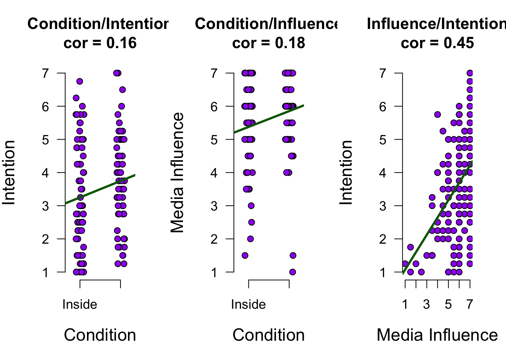

22. Mediation
In this lecture we aim to:
- Explore mediation analysis
- Link it to regression
- Introduce the Process module
- Demonstrate in JASP
Reading: Chapter 10 (§10.2, §10.4–10.7)
Applet
Mediation
Mediation

In statistics, a mediation model is one that seeks to identify and explain the mechanism or process that underlies an observed relationship between an independent variable and a dependent variable via the inclusion of a third hypothetical variable, known as a mediator variable (also a mediating variable, intermediary variable, or intervening variable).
Source: WIKIPEDIA
Shared variance

Back to lecture 6. Do anxious students simply revise less?
- Predictor anxiety, mediator revision
- Total effect, regions \(A + C\)
- Path \(a\), regions \(C + D\)
- Path \(b\), region \(B\)
- Path \(c\), region \(A\)
- Shared by both predictors, region \(C\)
Example
Tal-Or et al. (2010): Testing causal direction in the influence of presumed media influence
Does an article about a sugar shortage on the front page increase the intention to buy sugar, or is this effect mediated by presumed media influence?
Condition: front page (1) or inside page (0), randomized (predictor)MediaInfluence: how much people think others will buy sugar, 1 to 7 (mediator)Intention: intention to buy sugar, 1 to 7 (outcome)
Data from the JASP Data Library, also used in Hayes (2022, Section 3.3)
Total effect
- Total effect:
- \(\widehat{\text{Outcome}} = b_0 + b_t \text{Predictor}_i\)
Mediation paths
You found my sneaky text to create space! You are awesome. Muahahahahahahahahahahahahahahahahahahahahahahahaha haha…hah.. uhhhh
- Total effect:
- \(\widehat{\text{Outcome}} = b_0 + b_t \text{Predictor}_i\)
- Mediator effect (a):
- \(\widehat{\text{Mediator}} = b_0 + b_a \text{Predictor}_i\)
- Combined effect (b + c):
- \(\widehat{\text{Outcome}} = b_0 + b_{c} \text{Predictor}_i + b_b \text{Mediator}_i\)
The data
Fit 3 models
model.outcome.predictor <- lm(intention ~ condition)
model.mediator.predictor <- lm(media.influence ~ condition)
model.combined <- lm(intention ~ condition + media.influence)- Total effect:
- \(\widehat{\text{Outcome}} = b_0 + b_t \text{Predictor}_i\)
- Mediator effect:
- \(\widehat{\text{Mediator}} = b_0 + b_a \text{Predictor}_i\)
- Combined effect:
- \(\widehat{\text{Outcome}} = b_0 + b_{c} \text{Predictor}_i + b_b \text{Mediator}_i\)
Extract beta coefficients
b.outcome.predictor <- model.outcome.predictor$coefficients[2] # b.t
b.mediator.predictor <- model.mediator.predictor$coefficients[2] # b.a
b.combined.mediator <- model.combined$coefficients[3] # b.b
b.combined.predictor <- model.combined$coefficients[2] # b.c- Total effect:
- \(\widehat{\text{Outcome}} = b_0 + b_t \text{Predictor}_i\)
- Mediator effect:
- \(\widehat{\text{Mediator}} = b_0 + b_a \text{Predictor}_i\)
- Combined effect:
- \(\widehat{\text{Outcome}} = b_0 + b_{c} \text{Predictor}_i + b_b \text{Mediator}_i\)
View beta coefficients
b.mediator.predictor # b.a[1] 0.4765252b.combined.mediator # b.b[1] 0.5064485View beta coefficients
b.outcome.predictor # b.t [1] 0.4956897b.mediator.predictor # b.a [1] 0.4765252b.combined.mediator # b.b[1] 0.5064485b.combined.predictor # b.c[1] 0.2543542
Path plot

Visual

Calculate indirect effect
\(a \times b = b_a \times b_b\)
indirect <- b.mediator.predictor * b.combined.mediator; indirect # a * b[1] 0.2413355indirect + b.combined.predictor # a * b + c [1] 0.4956897b.outcome.predictor # total effect[1] 0.4956897
Calculate indirect effect (partially standardized)
\(\frac{ab}{s_{Outcome}} = \frac{b_a b_b}{s_{Outcome}}\)
b.mediator.predictor*b.combined.mediator / sd(intention)[1] 0.1556704- Predictor is 0/1, so only the outcome is standardized (Section 10.4.3)
Calculate \(P_M\)
\(\frac{ab}{total} = \frac{b_a b_b}{b_t} = \frac{b_a b_b}{b_a b_b + b_c}\)
(b.mediator.predictor*b.combined.mediator) /
b.outcome.predictor[1] 0.4868681The proportion of the total effect that can be attributed to the mediator
Does not take into account size of total effect
“although it is tempting to think of \(P_M\) as a proportion (because it is the ratio of the indirect effect to the total effect) it is not: it can exceed 1 and even take negative values (Preacher & Kelley, 2011).”
Is the indirect effect significant?
- Test the indirect effect \(a \times b\) itself (Section 10.4.2)
- JASP gives its estimate, \(p\)-value and 95% CI
- In the Direct and indirect effects table
- Significant indirect effect if \(p < \alpha\)
- The CI shows how precisely \(a \times b\) is estimated
- Assumptions in doubt? Bootstrap the indirect effect (lecture 21)
- Options → Method → Bootstrap
- Only the CI is bootstrapped, not the \(p\)-value
Checking the assumptions
Where to check each assumption in JASP (mediator and combined models)1
| Assumption | In JASP | Looks fine when |
|---|---|---|
| Multicollinearity (combined model) | Statistics → Coefficients → Tolerance and VIF | all VIFs below 10, average close to 1 |
| Linearity, equal variances | Plots → Residuals vs. predicted | a random cloud around 0 |
| Normality of the residuals | Plots → Q-Q plot standardized residuals → Confidence interval | points close to the line, mostly within the band |
| Outliers, influential cases | Statistics → Residuals → Casewise diagnostics | about 5% of std. residuals beyond \(\pm 2\) at most, Cook’s distance below 1 |
Caution with Process models
When we test such hypotheses with the help of path models applied to observational data, we are in the business of causal inference on the basis of observational data
Tutorial paper (in preparation)
van Doorn, Lüken, Vroegh, Montoya & Wagenmakers. A tutorial on moderation and mediation analysis in JASP
- Walks through one real study, step by step in JASP
- Predictor and mediator both manipulated (Ren & Schaumberg, 2024)
- Uses \(c'\) for the direct effect (the book uses \(c\))
More examples
- Today’s example - Presumed Media Influence
- Crazier example - Age and Fatigue
- For the exam, max 1 mediator (but see Section 10.4.7)
JASP

Closing
Recap
- Mediation analysis is a way to model dependence between predictors
- Process module is very flexible
- Causal assumptions extremely important with Process models
Exam note
- For the exam, max 1 mediator (but see Section 10.4.7)
- Read paths \(a\), \(b\) and \(c\) from the Path coefficients table
- Test mediation with the \(p\)-value of the indirect effect \(a \times b\)
- Report its estimate, \(p\)-value and 95% CI (Section 10.4.6)
Next Time
- Moderation: interactions between continuous predictors (lecture 26)
Recommended Exercises
Labcoat Leni 10.1
Massar et al. (2012): I heard that Jane has a boil and kissed a tramp
Do younger women gossip more, and is this mediated by their mate value?
age: 20 to 50 (predictor)mate_value: sexual desirability (mediator)gossip: tendency to gossip (outcome)
Contact

Footnotes
The Process module has no residual plots or collinearity statistics, so fit both models in Linear Regression (lecture 21).↩︎